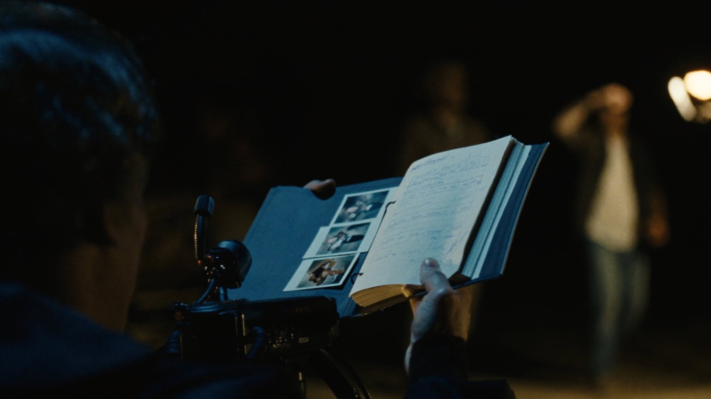
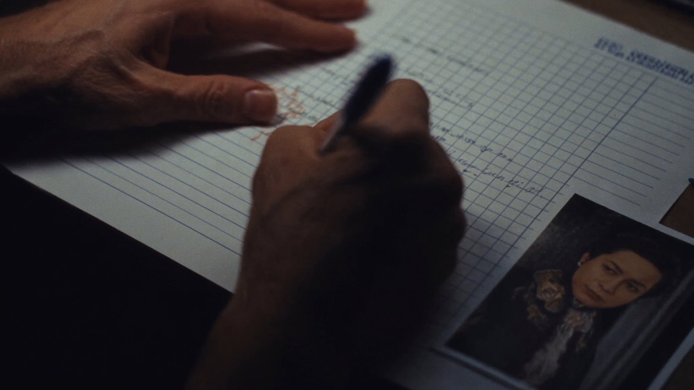
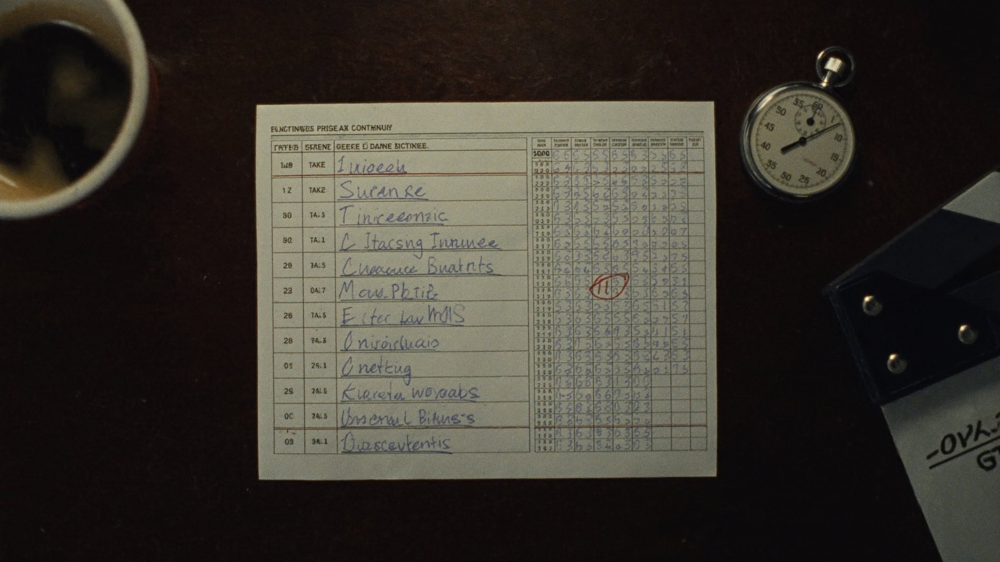
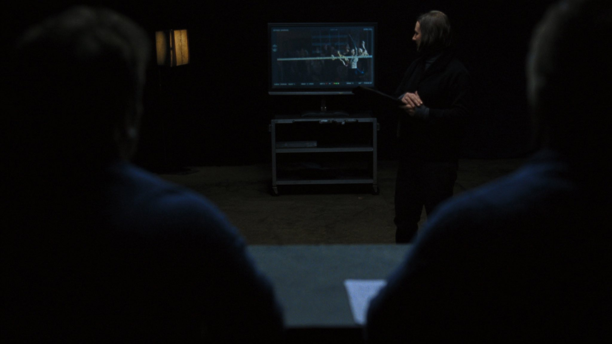
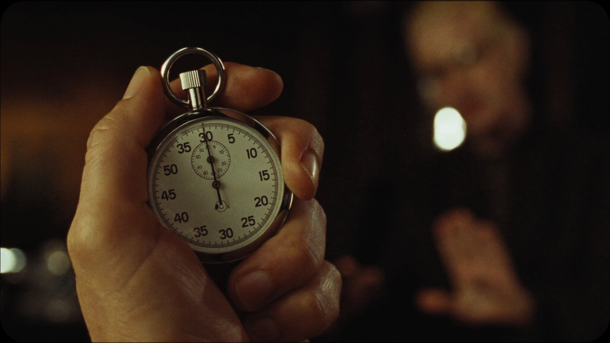
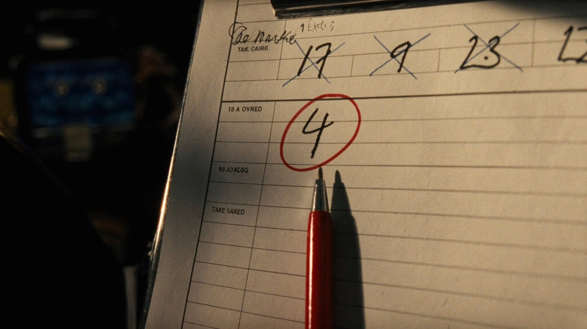
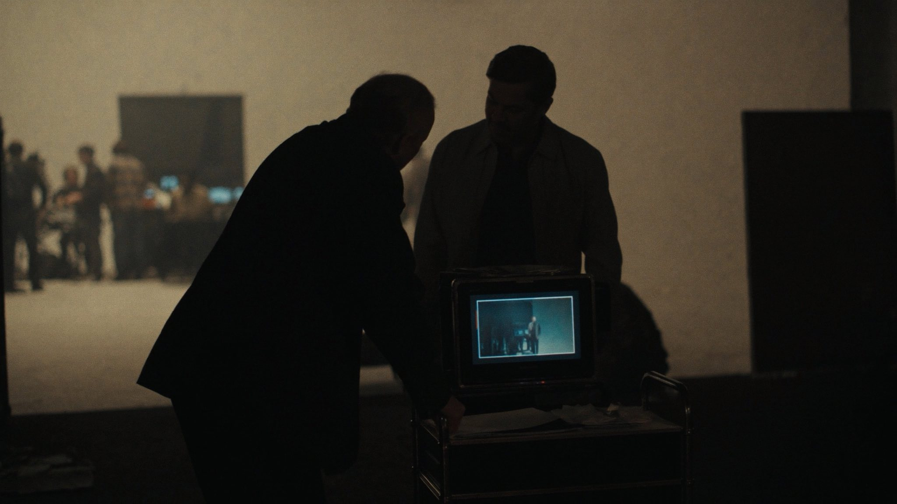
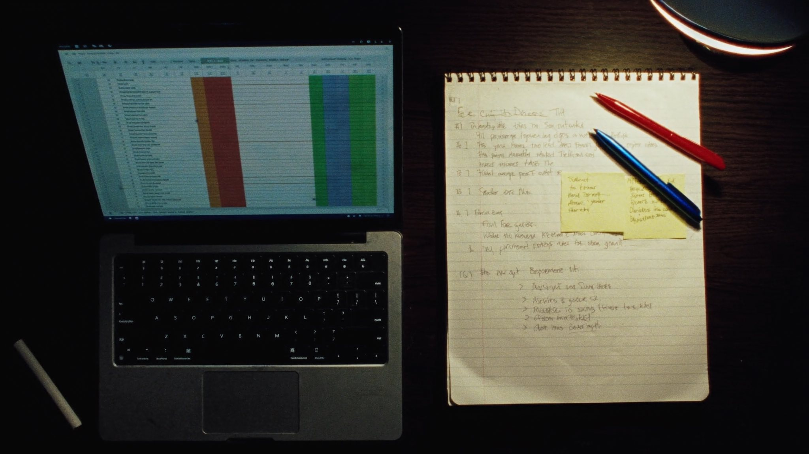
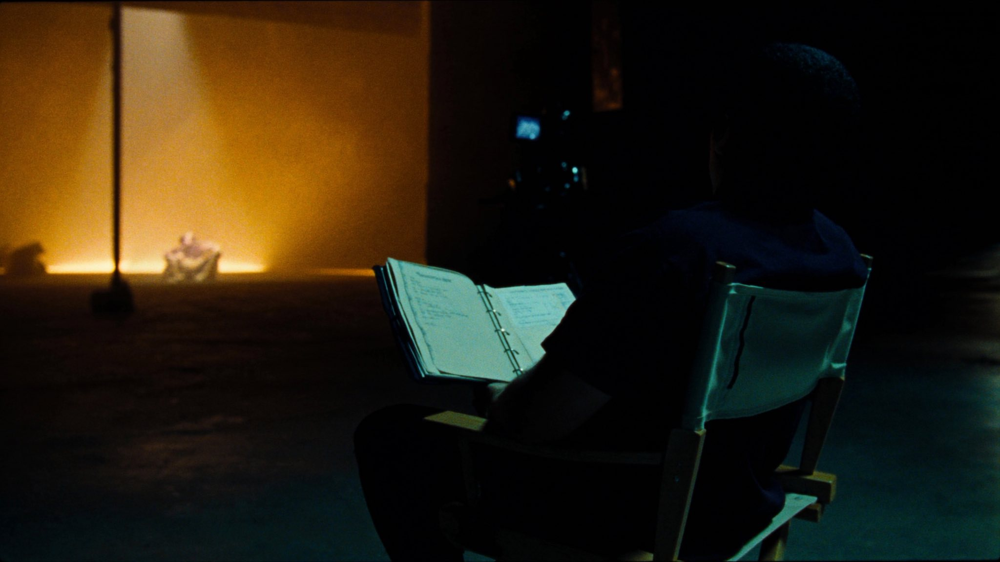

LE
SCRIPTE
Noter absolument tout, plan par plan, seconde par seconde — pour que le monteur retrouve la bonne prise et que le film reste cohérent du premier clap au dernier.
La scripte est la mémoire du film. Pas une assistante — une archiviste en temps réel.
Sur un plateau de cinéma, tout le monde a les yeux braqués sur quelque chose de différent. La scripte est la seule personne dont le travail est de voir et de noter absolument tout, simultanément.
Ce qu'elle observe
La position de chaque objet, l'état de chaque costume, à quel mot exact du dialogue commence chaque geste — pour que le plan suivant raccorde parfaitement, même tourné trois semaines plus tard.
Ce qu'elle produit
Le rapport scripte : le document unique qu'attend le monteur. Sans lui, retrouver la bonne prise parmi des heures de rushes peut coûter des journées entières de travail.
Sa vraie place
Ni dans l'ombre, ni dans la lumière — juste à côté du réalisateur, carnet ouvert, chronomètre en main, à porter la mémoire d'un film que personne d'autre ne voit en entier.
Neuf chapitres, du carnet à la salle de montage.
Clique sur un chapitre pour l'ouvrir. Chacun contient le contenu essentiel et un exercice pratique à faire dans le champ texte fourni.
Qui est la scripte, et pourquoi ce poste existe

Le cinéma est une machine à discontinuité. Un film de 90 minutes est rarement tourné dans l'ordre, rarement en une seule journée, et jamais en une seule prise. Chaque scène peut être tournée des semaines après la scène qui la précède au montage. Entre les deux, les acteurs ont changé de coiffure, les accessoires ont bougé, l'éclairage a été reconstruit de zéro. La scripte est la personne dont le rôle est de s'assurer que ces deux scènes semblent avoir été tournées dans la même seconde.
Le terme exact en anglais est script supervisor. En France, on dit scripte — et c'est bien un nom en soi, pas un diminutif. La scripte ne "garde le script" : elle supervise la continuité de l'ensemble du film, tout au long du tournage.
Trouve 3 ruptures de raccord dans un film
- Choisis un film ou une série que tu connais bien.
- Identifie 3 erreurs de continuité visibles (position d'objet, vêtement, cheveux, lumière).
- Note pour chacune : quelle scène, quel plan, ce qui change entre deux plans consécutifs.
La continuité, l'obsession du raccord

Imagine cette scène : un acteur boit un verre de vin à moitié plein, pose le verre, dit sa réplique. On tourne six fois cette prise. Au plan suivant, filmé deux heures après, le verre est plein. Au montage, le verre saute de moitié plein à plein entre deux coupes — rupture de continuité. Le spectateur ne comprend pas forcément pourquoi, mais il ressent que quelque chose cloche. L'immersion est brisée.
Autre exemple classique : une cigarette. Un acteur en allume une au début de la scène. La scène dure trois minutes à l'image — mais en réalité, elle a été tournée en quatre heures et quinze prises. Si la scripte ne note pas à quel moment exact la cigarette est allumée, à quelle longueur elle est rendue à chaque réplique, le monteur va se retrouver avec une cigarette neuve puis presque consumée puis neuve à nouveau.
- Position des mains, des bras, des épaules à chaque réplique clé
- Direction du regard à l'entrée et à la sortie de chaque plan
- État des accessoires (verre, livre, stylo, téléphone) plan par plan
- Position des acteurs par rapport aux meubles et au décor
- Détails de coiffure et de maquillage susceptibles de bouger
Observe et note comme une scripte
- Choisis une scène de dialogue de 2 à 3 minutes dans un film.
- Regarde-la une première fois normalement.
- Regarde-la une deuxième fois en notant, plan par plan : position des mains, état des objets, direction du regard.
- Est-ce que tout raccorde ? Qu'aurais-tu noté si tu avais été scripte sur ce tournage ?
Le rapport scripte

À la fin de chaque journée de tournage, la scripte remet au monteur un document : le rapport scripte. C'est le seul lien structuré entre le plateau et la salle de montage. Sans lui, le monteur reçoit des heures de rushes sans aucune carte pour s'y repérer.
Ce rapport contient, pour chaque prise tournée dans la journée : le numéro de scène et de prise, la durée chronométrée, le timecode de début, le commentaire technique (son parasite, problème de mise au point, acteur qui a buté sur une réplique), et surtout la mention "circled" — la prise que le réalisateur a validée en fin de tournage comme prise à monter en priorité.
| Scène | Prise | Durée | Circled | Commentaire |
|---|---|---|---|---|
| 12A | 1 | 1'42" | — | Son : bruit d'avion à 0'55" |
| 12A | 2 | 1'38" | — | Acteur a buté sur "manifestement" |
| 12A | 3 | 1'41" | ✓ | Bonne. Jeu + technique OK |
| 12A | 4 | 1'39" | — | Réserve — jeu légèrement différent |
Simule le rapport scripte d'une scène de 4 prises
- Invente une scène fictive (ex. : une dispute au restaurant, scène 7B).
- Décris 4 prises avec durées, un commentaire pour chacune, et désigne une prise "circled".
- Justifie ton choix de prise circled.
La règle des 180° et le sens de l'écran

Si tu as lu le manuel Réalisateur, tu connais déjà la règle des 180° : dans une scène entre deux personnages, la caméra doit rester du même côté d'une ligne imaginaire tracée entre eux. Si elle franchit cette ligne, les personnages semblent soudain regarder dans la même direction — et le spectateur perd ses repères.
Le réalisateur connaît cette règle. Le directeur de la photographie aussi. Mais sur un plateau en plein tournage, avec la pression du planning, il est facile de placer la caméra au mauvais endroit sans s'en rendre compte. La scripte est celle qui surveille ce problème en temps réel — et qui doit l'alerter avant que le clap ne retentisse, pas après.
Trace la ligne dans une scène de dialogue
- Prends une scène de dialogue entre deux personnages dans un film de ton choix.
- En regardant les plans, détermine de quel côté la caméra se trouve par rapport aux deux acteurs.
- Est-ce que la caméra change de côté à un moment ? Si oui, comment le film gère-t-il ce raccord (plan neutre ? coupe franche ?) ?
Minuter une scène

Chaque prise est chronométrée au clap de début. Ce n'est pas une formalité : c'est un outil de pilotage essentiel. La scripte cumule les durées des prises validées et peut, dès les premiers jours de tournage, estimer la durée finale du film.
La règle empirique de base : un scénario professionnel de 90 pages équivaut à environ 90 minutes de film. Une page de scénario formaté correctement correspond à peu près à une minute à l'écran — pas toujours, mais en moyenne sur un film entier. Si les prises circled s'accumulent et donnent des scènes qui durent systématiquement 20% de plus que prévu au scénario, la production peut recalculer le résultat final dès la deuxième semaine de tournage.
Calcule la durée probable d'un fragment de scénario
- Lis un extrait de scénario de 5 pages (format standard — tu peux en trouver légalement sur les sites de bibliothèques de scénarios).
- Estime la durée à l'écran de chacune des scènes présentes.
- Quelle est la durée totale estimée pour ces 5 pages ? Est-ce proche de la règle d'une minute par page ?
La prise et le "circled take"

Après chaque plan tourné, le réalisateur dit — ou fait signe — quelle prise garder. La scripte le transcrit dans son rapport avec une notation sans ambiguïté : un cercle dessiné autour du numéro de prise, d'où le terme circled take. C'est la prise que le monteur doit numériser et monter en priorité.
Attention à une distinction essentielle : la prise circled n'est pas nécessairement la meilleure techniquement. Un plan peut être parfaitement net, avec un son irréprochable, et ne pas être circled — parce que le réalisateur a préféré le jeu d'un acteur dans une autre prise, même si cette prise avait un léger problème de mise au point. La scripte note ce que le réalisateur décide, pas ce qu'elle pense être le meilleur plan.
Joue le rôle du réalisateur qui circle une prise
- Imagine que tu as tourné une scène en 5 prises. Décris en quelques lignes ce qui s'est passé à chaque prise (acteur hésitant, micro dans le cadre, jeu différent, prise parfaite technique mais froide, etc.).
- Désigne ta prise circled et justifie ce choix.
- Désigne une prise de réserve et explique dans quel cas le monteur pourrait en avoir besoin.
Travailler avec le réalisateur et le 1er AD

Sur un plateau, le temps est de l'argent — au sens littéral. Une journée de tournage coûte des milliers, parfois des dizaines de milliers d'euros. La scripte est la seule personne du plateau dont le travail est aussi de signaler des problèmes — et cette responsabilité est délicate à exercer sans créer de friction.
La règle non écrite : si tu repères une rupture de continuité avant le clap, tu interviens — calmement, directement, sans paniquer l'équipe. Si tu la repères après le clap, tu la notes dans ton rapport avec précision, et tu l'évoques avec le réalisateur entre les prises, jamais pendant. Si la rupture est grave (une erreur qui rendra le montage impossible), tu alertes immédiatement même au milieu du tournage.
- Le 1er AD gère le temps et le planning — coordonne avec lui pour toute alerte qui demande un retournage
- Ne jamais contredire le réalisateur publiquement devant l'équipe technique
- Toujours formuler une alerte comme une information, pas comme un reproche : "Je veux juste vérifier — dans le plan précédent la veste était ouverte"
- Tenir un carnet de décisions : si le réalisateur choisit délibérément de garder une rupture de continuité, note-le comme une décision artistique consciente
Trouve comment signaler un problème sans créer de tension
- Imagine trois situations : (A) acteur avec la mauvaise veste entre deux plans, (B) un objet déplacé que le réalisateur n'a pas remarqué, (C) une rupture que le réalisateur a délibérément choisie.
- Pour chacune, écris la phrase exacte que tu dirais au réalisateur — le ton, le moment choisi, et ce que tu noterais dans ton rapport.
Les outils du métier

La scripte a toujours travaillé avec un carnet et un chronomètre. Ces outils ont évolué, mais la logique reste la même : noter vite, noter précis, ne jamais laisser de trou dans le rapport.
- Le carnet papier — encore utilisé par beaucoup de scriptes confirmées. Pas de panne de batterie, pas besoin de déverrouiller un écran, annotations rapides au crayon ou au stylo. Inconvénient : le rapport doit être retranscrit à la machine le soir.
- ScriptE Systems — logiciel professionnel spécialisé pour les scriptes, disponible sur iPad. Gère automatiquement les numéros de scènes, les timecodes, les prises, et génère le rapport scripte en PDF. Très répandu sur les grosses productions anglo-saxonnes.
- Movie Slate (application) — alternative iPad plus légère, avec intégration photo directe pour les références de continuité.
- L'appareil photo / téléphone — pour les photos de référence entre les prises. Aucune scripte ne travaille sans.
- La fiche de continuité papier — un format standard de tableau qui peut être photocopié à l'avance, une fiche par scène. Certaines productions fournissent des carnets pré-imprimés à la scripte.
Crée un modèle de fiche de continuité pour une scène
- Sur une feuille (ou un document texte), dessine ou structure une fiche de continuité vierge pour une scène.
- Quelles colonnes et quels champs inclus-tu ? Pourquoi ?
- Compare ta fiche avec un modèle que tu peux trouver en ligne (cherche "script supervisor continuity sheet template").
Devenir scripte

Il n'existe pas de diplôme de scripte. Le métier s'apprend principalement sur le terrain, en commençant comme assistante scripte (aussi appelée stagiaire scripte) sur de petites productions, puis en montant progressivement vers des projets plus complexes.
Les qualités les plus citées par les recruteurs et les réalisateurs qui cherchent une scripte : une rigueur quasi maniaque (une seule erreur peut coûter un retournage), une excellente mémoire visuelle, la capacité à rester concentrée pendant dix à douze heures consécutives dans des conditions parfois inconfortables, et une discrétion absolue. La scripte entend tout, sait tout — et ne répète rien.
- Commencer comme stagiaire scripte sur des courts-métrages ou des productions étudiantes — le meilleur terrain d'entraînement
- Certaines formations cinéma incluent un module scripte (ESRA, CLCF, École de la Cité en France)
- Le Syndicat des Techniciens du Cinéma peut orienter vers des formations continues
- Des scriptes confirmées donnent des master classes ponctuelles — très utiles pour comprendre les standards professionnels réels
Identifie une première étape concrète
- Cherche un court-métrage en préparation dans ton réseau ou sur des groupes de production locaux.
- Propose-toi comme stagiaire scripte, même gratuitement — l'expérience vaut plus qu'un salaire à ce stade.
- Si aucun projet n'est disponible : filme toi-même une scène de 3 minutes avec deux amis et tiens le rapport scripte complet pour chaque prise.
Trois scriptes qui ont façonné le cinéma.
Le travail de la scripte est par nature invisible — si elle a bien fait son travail, personne ne le remarque. Ces trois femmes ont rendu ce travail visible par leur longévité et leur exigence.
Scripte légendaire ayant travaillé avec John Huston pendant plus de trente ans — de The African Queen (1951) à The Dead (1987). Elle était sur The Man Who Would Be King (1975), The Misfits (1961) avec Marilyn Monroe et Clark Gable. Huston n'imaginait pas tourner sans elle. Son rapport quotidien était décrit par les monteurs de l'époque comme le document le plus précis de l'industrie britannique.
Scripte de François Truffaut de la Nouvelle Vague jusqu'aux années 1980, elle est devenue progressivement sa plus proche collaboratrice, co-écrivant avec lui L'Homme qui aimait les femmes (1977), Le Dernier Métro (1980) et Vivement dimanche ! (1983). Elle a ensuite réalisé Le Moine et la Sorcière (1987). Son parcours illustre la trajectoire possible : de la scripte à la créatrice à part entière.
Pionnière du métier en Grande-Bretagne dans les années 1940, elle a travaillé pour la GPO Film Unit et les studios Ealing, puis est devenue la première femme à rejoindre l'ACTT (Association of Cinematograph, Television and Allied Technicians) en tant que réalisatrice, une transition directe depuis son travail de scripte. Elle a consacré la fin de sa vie à former les nouvelles générations et à documenter l'histoire du métier.
Bibliographie et ressources.
Le petit quiz de fin de parcours.
NIVEAU 1 — BASES1. Quel est le rôle principal de la scripte sur un tournage ?
NIVEAU 1 — BASES2. Qu'est-ce qu'une "rupture de continuité" ?
NIVEAU 1 — BASES3. À qui est destiné le rapport scripte ?
NIVEAU 2 — APPLICATION4. Qu'est-ce qu'une prise "circled" ?
NIVEAU 2 — APPLICATION5. Pourquoi la scripte chronométre chaque prise ?
NIVEAU 3 — ANALYSE6. Quelle est la règle empirique reliant pages de scénario et durée à l'écran ?
NIVEAU 3 — ANALYSE7. Quand la scripte doit-elle signaler un problème de raccord au réalisateur ?
NIVEAU 4 — EXPERT8. Pourquoi une rupture de continuité détectée en salle de montage est-elle plus grave qu'une détectée sur le plateau ?
NIVEAU 5 — MAÎTRISE9. En quoi la prise circled n'est-elle pas nécessairement la meilleure prise techniquement ?
NIVEAU 5 — MAÎTRISE10. Quelle compétence distingue une scripte confirmée d'une débutante, au-delà de la maîtrise des outils ?